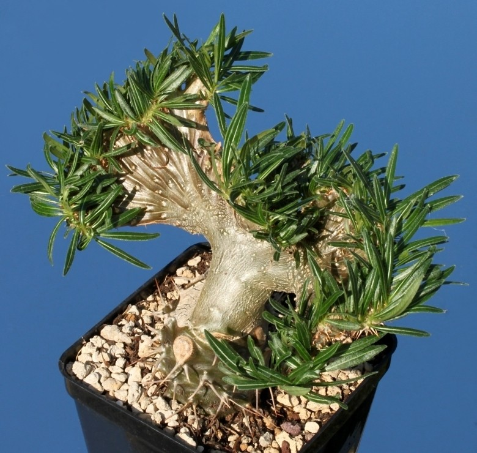

Los bosques secos del oeste de Madagascar se caracterizan por estaciones secas prolongadas y suelos arenosos. Estas condiciones han dado lugar a adaptaciones únicas: plantas suculentas y caducifolias que sobreviven meses sin lluvia. Explora cómo un ecosistema al borde del desierto se convierte en un museo vivo de biodiversidad.

Adansonia grandidieri
Conocido como el gran baobab, puede almacenar aguas en su tronco y alcanzar 30 m de altura. Se observa en pasillos de avenidas epónimas.

Pachypodium rosulatum
Este arbusto suculento almacena agua en su tronco bulboso y florece con flores amarillas en temporada húmeda.